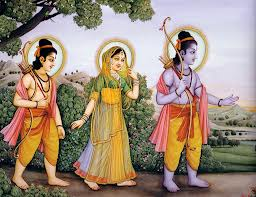

चौपाई :
सुनहु प्रानप्रिय भावत जी का। देहु एक बर भरतहि टीका॥ मागउँ दूसर बर कर जोरी। पुरवहु नाथ मनोरथ मोरी॥1॥
(रानी कैकेयी बोली-) हे प्राण प्रिय! (तो फिर) सुनिए, मेरा मनभावन, मेरा मनवांच्छित एक (पहला) वर तो भरत को राजतिलक दीजिए, और हे नाथ! दूसरा वर भी मैं हाथ जोड़कर माँगती हूँ, मेरी मनोकामना पूरी कीजिए-॥1॥
तापस बेष बिसेषि उदासी। चौदह बरिस रामु बनबासी॥ सुनि मृदु बचन भूप हियँ सोकू। ससि कर छुअत बिकल जिमि कोकू॥2॥
तपस्वियों के वेष में विशेष उदासीन भाव से, पृर्णरूप से संसार से विरक्त, (सन्यासी त्यागी स्वरूप में ) राम चौदह वर्ष तक वन में निवास करें। कैकेयी के कोमल (विनययुक्त) वचन सुनकर राजा के हृदय में ऐसा शोक हुआ जैसे चन्द्रमा की किरणों के स्पर्श से चकवा विकल हो जाता है॥2॥
गयउ सहमि नहिं कछु कहि आवा। जनु सचान बन झपटेउ लावा॥ बिबरन भयउ निपट नरपालू। दामिनि हनेउ मनहुँ तरु तालू॥3॥
राजा सहम गए, उनसे कुछ कहते न बना, एकदम अवाक-सन्न मानो बाज वन में बटेर पर झपटा हो। राजा का रंग एकदम से उड़ गया, मानो ताड़ के पेड़ को बिजली ने झुलसकर बदरंगा कर दिया हो।॥3॥
माथें हाथ मूदि दोउ लोचन। तनु धरि सोचु लाग जनु सोचन॥ मोर मनोरथु सुरतरु फूला। फरत करिनि जिमि हतेउ समूला॥4॥
माथे पर हाथ रखकर, दोनों नेत्र बंद करके राजा का तन ही सोच हो करके सोच कर रहा है। जैसे राजा का तन सोच में घुल गया है । (वे सोचते हैं- हाय!) मेरा मनोरथ रूपी कल्पवृक्ष फल फूल चुका, पूरे यौवन पर था, परन्तु फलते समय कैकेयी ने हथिनी की तरह उसे जड़ समेत उखाड़कर नष्ट कर डाला॥4॥
अवध उजारि कीन्हि कैकेईं। दीन्हिसि अचल बिपति कै नेईं॥5॥
कैकेयी ने अयोध्या को उजाड़ कर रख दिया और विपत्ति की अचल (सुदृढ़) नींव डाल दी॥5॥
दोहा :
कवनें अवसर का भयउ गयउँ नारि बिस्वास। जोग सिद्धि फल समय जिमि जतिहि अबिद्या नास॥29॥
किस अवसर पर क्या हो गया! स्त्री का विश्वास करके मैं वैसे ही मारा गया, जैसे योग की सिद्धि रूपी फल मिलने के समय योगी को विद्या धोखा दे जाती है। (और अविद्या योग सिद्धि को नष्ट कर देती है)। ॥29॥
चौपाई :
एहि बिधि राउ मनहिं मन झाँखा। देखि कुभाँति कुमति मन माखा॥ भरतु कि राउर पूत न होंही। आनेहु मोल बेसाहि कि मोही॥1॥
इस प्रकार राजा मन ही मन झींख रहे हैं। राजा का ऐसा बुरा हाल देखकर दुर्बुद्धि कैकेयी मन में बुरी तरह से क्रोधित हुई। (और बोली-) क्या भरत आपके पुत्र नहीं हैं? क्या मुझे आप दाम देकर खरीद लाए हैं? (क्या मैं आपकी विवाहिता पत्नी नहीं हूँ?)॥1॥
जो सुनि सरु अस लाग तुम्हारें। काहे न बोलहु बचनु सँभारें॥ देहु उतरु अनु करहु कि नाहीं। सत्यसंध तुम्ह रघुकुल माहीं॥2॥
जो मेरा वचन सुनते ही आपको बाण सा लगा तो (फिर वचन देते समय सावधानी क्यों नहीं बरती ? -आप सोच-समझकर बात क्यों नहीं कहते? उत्तर दीजिए- हाँ कीजिए, नहीं तो नाहीं कर दीजिए। आप रघुवंश में सत्य प्रतिज्ञा वाले (प्रसिद्ध) हैं!॥2॥
देन कहेहु अब जनि बरु देहू। तजहु सत्य जग अपजसु लेहू॥ सत्य सराहि कहेहु बरु देना। जानेहु लेइहि मागि चबेना॥3॥
आपने ही वर देने को कहा था, अब भले ही न दीजिए। सत्य को छोड़ दीजिए और जगत में अपयश लीजिए। सत्य की बड़ी सराहना करके वर देने को कहा था। समझा था कि यह चबेना ही माँग लेगी!॥3॥
सिबि दधीचि बलि जो कछु भाषा। तनु धनु तजेउ बचन पनु राखा॥ अति कटु बचन कहति कैकेई। मानहुँ लोन जरे पर देई॥4॥
राजा शिबि, दधीचि और बलि ने जो कुछ कहा - वचन दिया, शरीर और धन त्यागकर भी उन्होंने अपने वचन की प्रतिज्ञा को निबाहा, उसकी रक्षा की। कैकेयी बहुत ही कड़ुवे वचन कह रही है, मानो जले पर नमक छिड़क रही है । (जैसे जले पर नमक रगड़ रही है । )॥4॥
दोहा :
धरम धुरंधर धीर धरि नयन उघारे रायँ। सिरु धुनि लीन्हि उसास असि मारेसि मोहि कुठायँ॥30॥
धर्म की धुरी को धारण करने वाले राजा दशरथ ने धीरज धरकर नेत्र खोले और सिर धुना –माथा पीटा तथा लंबी साँस लेते हुए (अपने आपमें इस प्रकार माना – कहा कि) इसने मुझे बड़े कुठौर मारा है । ॥30॥
चौपाई :
आगें दीखि जरत सिर भारी। मनहुँ रोष तरवारि उघारी॥ मूठि कुबुद्धि धार निठुराई। धरी कूबरीं सान बनाई॥1॥
प्रचंड क्रोध में जलती हुई कैकेयी सामने इस प्रकार दिखाई पड़ी, मानो क्रोध रूपी तलवार नंगी (म्यान से बाहर) खड़ी हो। कुबुद्धि उस तलवार की मूठ है, निष्ठुरता धार है और वह कुबरी (मंथरा) रूपी सान पर धरकर तेज की हुई है॥1॥
लखी महीप कराल कठोरा। सत्य कि जीवनु लेइहि मोरा॥ बोले राउ कठिन करि छाती। बानी सबिनय तासु सोहाती॥2॥
राजा ने देखा कि यह (तलवार) बड़ी ही भयानक और कठोर है (और सोचा-) क्या सत्य ही-वास्तव में यह मेरा जीवन लेगी? राजा अपनी छाती कड़ी करके, बहुत ही नम्रता के साथ उसे (कैकेयी को) प्रिय लगने वाली वाणी बोले-॥2॥
प्रिया बचन कस कहसि कुभाँती। भीर प्रतीति प्रीति करि हाँती॥ मोरें भरतु रामु दुइ आँखी। सत्य कहउँ करि संकरु साखी॥3॥
हे प्रिये! हे भीरु! विश्वास और प्रेम को नष्ट करके ऐसे बुरी तरह के वचन कैसे कह रही हो। मेरे तो भरत और रामचन्द्र दो आँखें (अर्थात एक से) हैं, यह मैं शंकरजी को साक्षी मान सत्य कहता हूँ॥3॥
अवसि दूतु मैं पठइब प्राता। ऐहहिं बेगि सुनत दोउ भ्राता॥ सुदिन सोधि सबु साजु सजाई। देउँ भरत कहुँ राजु बजाई॥4॥
मैं अवश्य सबेरे ही दूत भेजूँगा। दोनों भाई (भरत-शत्रुघ्न) सुनते ही तुरंत आ जाएँगे। अच्छा दिन (शुभ मुहूर्त) शोधवाकर, सब तैयारी करके डंका बजाकर मैं भरत को राज्य दे दूँगा॥4॥
दोहा :
लोभु न रामहि राजु कर बहुत भरत पर प्रीति। मैं बड़ छोट बिचारि जियँ करत रहेउँ नृपनीति॥31॥
राम को राज्य का लोभ नहीं है और भरत पर उनका बड़ा ही स्नेह है। मैं ही अपने मन में बड़े-छोटे का विचार करके (बड़े को ही राजतिलक की ) राजनीति का पालन कर रहा था ॥31॥
चौपाई :
राम सपथ सत कहउँ सुभाऊ। राममातु कछु कहेउ न काऊ॥ मैं सबु कीन्ह तोहि बिनु पूँछें। तेहि तें परेउ मनोरथु छूछें॥1॥
राम की सौ बार सौगंध खाकर मैं स्वाभाविक सत्य कहता हूँ कि राम की माता (कौसल्या) ने (इस विषय में) मुझसे कभी कुछ नहीं कहा।( हाँ इतना सत्य अवश्य है कि ) यह सब मैंने तुमसे बिना पूछे किया। इसी से मेरा मनोरथ व्यर्थ गया॥1॥
रिस परिहरु अब मंगल साजू। कछु दिन गएँ भरत जुबराजू॥ एकहि बात मोहि दुखु लागा। बर दूसर असमंजस मागा॥2॥
अब क्रोध छोड़ दे और मंगल साज पहन- सज। कुछ ही दिनों बाद भरत युवराज हो जाएँगे। एक ही बात का मुझे दुःख लगा कि तूँ ने दूसरा वरदान व्यर्थ ही (बड़ी दुविधा में ) माँगा॥2॥
अजहूँ हृदय जरत तेहि आँचा। रिस परिहास कि साँचेहुँ साँचा॥ कहु तजि रोषु राम अपराधू। सबु कोउ कहइ रामु सुठि साधू॥3॥
उसकी आँच से अब भी मेरा हृदय जल रहा है। यह (किसी प्रकार से भी) दिल्लगी में, क्रोध में अथवा सचमुच ही सच्चा है? (तो फिर) क्रोध को त्यागकर राम का अपराध तो बता। सब कोई कहते हैं कि राम बड़े ही –सज्जन हैं॥3॥
तुहूँ सराहसि करसि सनेहू। अब सुनि मोहि भयउ संदेहू॥ जासु सुभाउ अरिहि अनूकूला। सो किमि करिहि मातु प्रतिकूला॥4॥
तुम स्वयं भी राम की सराहना करती हो और उन पर स्नेह भी रखती हो । अब यह सुनकर मुझे संदेह हो गया है (कि तुम्हारी प्रशंसा और स्नेह कहीं झूठे तो न थे?) जिसका स्वभाव शत्रु के प्रीति भी नर्म-अनूकल है, वह माता के प्रतिकूल आचरण क्यों कर करेगा?॥4॥
दोहा :
प्रिया हास रिस परिहरहि मागु बिचारि बिबेकु। जेहिं देखौं अब नयन भरि भरत राज अभिषेकु॥32॥
हे प्रिये! हँसी-मज्जाक (या ) क्रोध (जो भी हो ) छोड़ दे और विवेकपूर्वक (उचित-अनुचित) विचारकर वर माँग, जिससे अब नेत्र-जी भरकर मैं भरत का राज्याभिषेक देख सकूँ॥32॥
चौपाई :
जिऐ मीन बरु बारि बिहीना। मनि बिनु फनिकु जिऐ दुख दीना॥ कहउँ सुभाउ न छलु मन माहीं। जीवनु मोर राम बिनु नाहीं॥1॥
मछली चाहे बिना पानी के जीती रहे और साँप भी चाहे बिना मणि के दीन-दुःखी होकर जीता रहे,परन्तु मेरा जीवन तो राम के बिना नहीं है और यह स्वाभाविक सत्य मैं मन में बिना किसी छल-कपट के कह रहा हूँ। ॥1॥
समुझि देखु जियँ प्रिया प्रबीना। जीवनु राम दरस आधीना॥ सुनि मृदु बचन कुमति अति जरई। मनहुँ अनल आहुति घृत परई॥2॥
हे चतुर सयानी प्रिये! (यह सब )जी में समझ देख, मेरा जीवन श्री राम दर्शन के अधीन है। (राम है तो प्राण है)। (परन्तु) राजा के कोमल वचन सुनकर दुर्बुद्धि कैकेयी अत्यन्त जल रही है। मानो अग्नि में घी की आहुतियाँ पड़ रही हैं॥2॥
कहइ करहु किन कोटि उपाया। इहाँ न लागिहि राउरि माया॥ देहु कि लेहु अजसु करि नाहीं। मोहि न बहुत प्रपंच सोहाहीं॥3॥
(कैकेयी कहती है-) आप करोड़ों उपाय क्यों न करें, यहाँ आपकी माया –जादू नहीं चलेगा । या तो मैंने जो माँगा है सो दीजिए, नहीं तो 'इन्कार' करके अपयश लीजिए। बहुत ज्यादा प्रपंच –बहलाना फुसलाना मुझे नहीं सुहाता ॥3॥
रामु साधु तुम्ह साधु सयाने। राममातु भलि सब पहिचाने॥ जस कौसिलाँ मोर भल ताका। तस फलु उन्हहि देउँ करि साका॥4॥
राम (कितने) साधु हैं, आप (कैसे) सयाने साधु हैं और राम की माता भी (कितनी) भली है, मैंने सब कुछ पहचान लिया है। कौसल्या ने मेरा जैसा भला चाहा है, मैं भी उसके प्रतिरूप (याद रखने योग्य) उन्हें वैसा ही फल दूँगी॥4॥
दोहा :
होत प्रात मुनिबेष धरि जौं न रामु बन जाहिं। मोर मरनु राउर अजस नृप समुझिअ मन माहिं॥33॥
(सबेरा होते ही मुनि का वेष धारण कर यदि राम वन को नहीं जाते, तो हे राजन्! मेरा मरन और आपका अपयश होना है सो मन में निश्चित समझ लीजिए !॥33॥
चौपाई :
अस कहि कुटिल भई उठि ठाढ़ी। मानहुँ रोष तरंगिनि बाढ़ी॥ पाप पहार प्रगट भइ सोई। भरी क्रोध जल जाइ न जोई॥1॥
ऐसा कहकर कुटिल कैकेयी उठ खड़ी हुई, मानो क्रोध की नदी उमड़ पड़ी हो। वह नदी पाप रूपी पहाड़ से प्रकट हुई है और क्रोध रूपी जल से भरी है, (ऐसे भयानक प्रवाह वाली कि) देखी नहीं जाती!॥1॥
दोउ बर कूल कठिन हठ धारा। भवँर कूबरी बचन प्रचारा॥ ढाहत भूपरूप तरु मूला। चली बिपति बारिधि अनूकूला॥2॥
दोनों वरदान उस नदी के दो किनारे हैं, कैकेयी का कठिन हठ ही उसकी (तीव्र) धारा है और कुबरी (मंथरा) के वचनों की प्रेरणा ही भँवर है। (वह क्रोध रूपी नदी) राजा दशरथ रूपी वृक्ष को जड़-मूल से ढहाती हुई विपत्ति रूपी समुद्र की ओर (सीधी) चली है॥2॥
लखी नरेस बात फुरि साँची। तिय मिस मीचु सीस पर नाची॥ गहि पद बिनय कीन्ह बैठारी। जनि दिनकर कुल होसि कुठारी॥3॥
(अब )राजा ने समझ लिया कि बात सचमुच (वास्तव में) सच्ची है, स्त्री के बहाने मेरी मृत्यु ही सिर पर नाच रही है। (तदनन्तर राजा ने कैकेयी के) चरण पकड़कर उसे बिठाकर विनती की कि तूँ सूर्यकुल (रूपी वृक्ष) के लिए कुल्हाड़ी मत बन॥3॥
मागु माथ अबहीं देउँ तोही। राम बिरहँ जनि मारसि मोही॥ राखु राम कहुँ जेहि तेहि भाँती। नाहिं त जरिहि जनम भरि छाती॥4॥
तूँ मेरा मस्तक माँग ले, मैं तुझे अभी दे दूँ। पर राम के विरह में मुझे मत मार। जिस किसी प्रकार से हो तूँ राम को रख ले। नहीं तो जन्मभर तेरी छाती जलेगी॥4॥
दोहा :
देखी ब्याधि असाध नृपु परेउ धरनि धुनि माथ। कहत परम आरत बचन राम राम रघुनाथ॥34॥
राजा ने देखा कि रोग असाध्य है, तब वे अत्यन्त आर्तवाणी से 'हा राम! हा राम! हा रघुनाथ!' कहते हुए सिर पीटकर जमीन पर गिर पड़े॥34॥
चौपाई :
ब्याकुल राउ सिथिल सब गाता। करिनि कलपतरु मनहुँ निपाता॥ कंठु सूख मुख आव न बानी। जनु पाठीनु दीन बिनु पानी॥1॥
राजा व्याकुल हो गए, उनका सारा शरीर शिथिल पड़ गया, मानो हथिनी ने कल्पवृक्ष को उखाड़ फेंका हो। कंठ सूख गया, मुख से बात नहीं निकलती, मानो पानी के बिना पहिना नामक मछली तड़प रही हो॥1॥
पुनि कह कटु कठोर कैकेई। मनहुँ घाय महुँ माहुर देई॥ जौं अंतहुँ अस करतबु रहेऊ। मागु मागु तुम्ह केहिं बल कहेऊ॥2॥
घाव में जहर भरती
कैकेयी फिर कड़वे और कठोर वचन बोली, मानो घाव में जहर भर रही हो। (कहती है-) जो अंत में ऐसा ही करतब (टालमटोल) करना था, तो आपने 'माँग, माँग' (की पुकार ललकार ) किस बल पर की थी ?॥2॥
दुइ कि होइ एक समय भुआला। हँसब ठठाइ फुलाउब गाला॥ दानि कहाउब अरु कृपनाई। होइ कि खेम कुसल रौताई॥3॥
दान और कंजूसी भी ?
हे राजा! ठहाका मारकर हँसना और गाल फुलाना- क्या ये दोनों एक साथ हो सकते हैं? दानी भी कहाना और कंजूसी भी करना। क्या रजपूती-युद्ध में क्षेम-कुशल भी रह सकती है?(लड़ाई में बहादुरी भी दिखावे और कहीं चोट भी न आवे!)॥3॥
छाड़हु बचनु कि धीरजु धरहू। जनि अबला जिमि करुना करहू॥ तनु तिय तनय धामु धनु धरनी। सत्यसंध कहुँ तृन सम बरनी॥4॥
स्त्री की भाँति रोना पीटना छोड़ सत्यव्रती बनो:
या तो वचन (प्रतिज्ञा) ही छोड़ दीजिए या धैर्य धारण कीजिए। यों असहाय स्त्री की भाँति रोना पीटना क्या कर रहे हो । सत्यव्रती के लिए तो शरीर, स्त्री, पुत्र, घर, धन और पृथ्वी- सब तिनके के बराबर कहे गए हैं॥4॥
दोहा :
मरम बचन सुनि राउ कह कहु कछु दोषु न तोर। लागेउ तोहि पिसाच जिमि कालु कहावत मोर॥35॥
कैकेयी के मर्मभेदी वचन सुनकर राजा ने कहा कि तूँ जो चाहे कह, तेरा कुछ भी दोष नहीं है। मेरा काल तुझे मानो पिशाच होकर लग गया है, वही तुझसे यह सब कहला रहा है॥35॥
चौपाई :
चहत न भरत भूपतहि भोरें। बिधि बस कुमति बसी जिय तोरें॥ सो सबु मोर पाप परिनामू। भयउ कुठाहर जेहिं बिधि बामू॥
भरत तो भूलकर भी राजपद नहीं चाहते। होनहारवश तेरे ही जी में कुमति आ बसी। यह सब मेरे पापों का परिणाम है, जिससे कुसमय (बेमौके) में विधाता विपरीत हो गया है ॥1॥
सुबस बसिहि फिरि अवध सुहाई। सब गुन धाम राम प्रभुताई॥ करिहहिं भाइ सकल सेवकाई। होइहि तिहुँ पुर राम बड़ाई॥2॥
(तेरी उजाड़ी हुई) यह सुंदर अयोध्या फिर भलीभाँति बसेगी और समस्त गुणों के धाम श्री राम की प्रभुता भी होगी। सब भाई उनकी सेवा करेंगे और तीनों लोकों में श्री राम की बड़ाई होगी॥2॥
तोर कलंकु मोर पछिताऊ। मुएहुँ न मिटिहि न जाइहि काऊ॥ अब तोहि नीक लाग करु सोई। लोचन ओट बैठु मुहु गोई॥3॥
केवल तेरा कलंक और मेरा पछतावा यह किसी तरह से भी नहीं जाएगा, मरने पर भी नहीं मिटेगा । अब तुझे जो अच्छा लगे वही कर। मुँह छिपाकर मेरी आँखों से दूर जा बैठ-सामने से हट जा, मुझे मुँह न दिखा। ॥3॥
जब लगि जिऔं कहउँ कर जोरी। तब लगि जनि कछु कहसि बहोरी॥ फिरि पछितैहसि अंत अभागी। मारसि गाइ नहारू लागी॥4॥
मैं हाथ जोड़कर कहता हूँ कि जब तक मैं जीता रहूँ, तब तक फिर कुछ न कहना- मुझसे न बोलना। अरी अभागिनी! अब जो तूँ ताँत से –चमड़े के साँटे से (पावित्र ) गाय को मार रही है फिर तूँ अन्त में पछताएगी । ॥4॥
दोहा :
परेउ राउ कहि कोटि बिधि काहे करसि निदानु। कपट सयानि न कहति कछु जागति मनहुँ मसानु॥36॥
राजा करोड़ों प्रकार से (बहुत तरह से) समझाकर (और यह कहकर) कि तूँ क्यों सर्वनाश कर रही है, पृथ्वी पर गिर पड़े। पर कपट करने में चतुर कैकेयी कुछ बोलती नहीं, मानो (मौन होकर) मसान जगा रही हो (श्मशान में बैठकर प्रेतमंत्र सिद्ध कर रही हो)॥36॥
चौपाई :
राम राम रट बिकल भुआलू। जनु बिनु पंख बिहंग बेहालू॥ हृदयँ मनाव भोरु जनि होई। रामहि जाइ कहै जनि कोई॥1॥
राजा 'राम-राम' रट रहे हैं और ऐसे व्याकुल हैं, जैसे कोई पक्षी पंख के बिना बेहाल हो। वे अपने हृदय में मनाते हैं कि सबेरा न हो और कोई जाकर श्री रामचन्द्रजी से यह बात न कहे॥1॥
उदउ करहु जनि रबि रघुकुल गुर। अवध बिलोकि सूल होइहि उर॥ भूप प्रीति कैकइ कठिनाई। उभय अवधि बिधि रची बनाई॥2॥
हे रघुकुल के गुरु (बड़ेरे, मूलपुरुष) सूर्य भगवान्! आप अपना उदय न करें। अयोध्या को (बेहाल) देखकर आपके हृदय में बड़ी पीड़ा होगी। राजा की प्रीति और कैकेयी की निष्ठुरता दोनों को ब्रह्मा ने सीमा तक रचकर बनाया है (अर्थात राजा प्रेम की सीमा है और कैकेयी निष्ठुरता की)॥2॥
बिलपत नृपहि भयउ भिनुसारा। बीना बेनु संख धुनि द्वारा॥ पढ़हिं भाट गुन गावहिं गायक। सुनत नृपहि जनु लागहिं सायक॥3॥
विलाप करते-करते ही राजा को सबेरा हो गया! राज द्वार पर वीणा, बाँसुरी और शंख की ध्वनि होने लगी। भाट लोग विरुदावली पढ़ रहे हैं और गवैये गुणों का गान कर रहे हैं। सुनने पर राजा को वे शुल जैसे लगते हैं॥3॥
मंगल सकल सोहाहिं न कैसें। सहगामिनिहि बिभूषन जैसें॥ तेहि निसि नीद परी नहिं काहू। राम दरस लालसा उछाहू॥4॥
राजा को ये सब मंगल साज कैसे नहीं सुहा रहे हैं, वैसे ही जैसे पति के साथ सती होने वाली स्त्री को आभूषण! श्री रामचन्द्रजी के दर्शन की लालसा और उत्साह के कारण उस रात्रि में किसी को भी नींद नहीं आई॥4॥
दोहा :
द्वार भीर सेवक सचिव कहहिं उदित रबि देखि। जागेउ अजहुँ न अवधपति कारनु कवनु बिसेषि॥37॥
राजद्वार पर मंत्रियों और सेवकों की भीड़ लगी है। वे सब सूर्य को उदय हुआ देखकर कहते हैं कि ऐसा कौन सा विशेष कारण है कि अवधपति दशरथजी अभी तक नहीं जागे?॥37॥
चौपाई :
पछिले पहर भूपु नित जागा। आजु हमहि बड़ अचरजु लागा॥ जाहु सुमंत्र जगावहु जाई। कीजिअ काजु रजायसु पाई॥1॥
राजा नित्य ही रात के पिछले पहर जाग जाया करते हैं, किन्तु आज हमें बड़ा आश्चर्य हो रहा है। हे सुमंत्र! जाओ, जाकर राजा को जगाओ। उनकी आज्ञा पाकर हम सब काम करें॥1॥
गए सुमंत्रु तब राउर माहीं। देखि भयावन जात डेराहीं॥ धाइ खाई जनु जाइ न हेरा। मानहुँ बिपति बिषाद बसेरा॥2॥
तब सुमंत्र राजमहल में भीतर गए, पर महल को भयानक देखकर वे जाते हुए डर रहे हैं। (ऐसा लगता है) मानो दौड़कर काट खाएगा, उसकी ओर देखा भी नहीं जाता। मानो विपत्ति और विषाद ने वहाँ डेरा डाल लिया हो॥2॥
पूछें कोउ न ऊतरु देई। गए जेहिं भवन भूप कैकेई॥ कहि जयजीव बैठ सिरु नाई। देखि भूप गति गयउ सुखाई॥3॥
पूछने पर कोई जवाब नहीं देता। वे उस महल में गए, जहाँ राजा और कैकेयी थे 'जय जीव' कहकर सिर नवाकर (वंदना करके) बैठे और राजा की दशा देखकर तो वे सूख ही गए॥3॥
सोच बिकल बिबरन महि परेऊ। मानहु कमल मूलु परिहरेऊ॥ सचिउ सभीत सकइ नहिं पूँछी। बोली असुभ भरी सुभ छूँछी॥4॥
(देखा कि-) राजा सोच से व्याकुल हैं, चेहरे का रंग उड़ गया है। जमीन पर ऐसे पड़े हैं, मानो कमल जड़ छोड़कर (मुर्झाया) पड़ा हो। मंत्री मारे डर के कुछ पूछ नहीं सकते। तब अशुभ से सनी और शुभ से अछूती कैकेयी बोली-॥4॥
दोहा :
परी न राजहि नीद निसि हेतु जान जगदीसु। रामु रामु रटि भोरु किय कहइ ना मरमु महीसु॥38॥
राजा को रातभर नींद नहीं आई, इसका कारण जगदीश्वर ही जानें। इन्होंने 'राम राम' रटकर सबेरा कर दिया, परन्तु इसका भेद राजा कुछ भी नहीं बतलाते॥38॥
चौपाई :
आनहु रामहि बेगि बोलाई। समाचार तब पूँछेहु आई॥ चलेउ सुमंत्रु राय रुख जानी। लखी कुचालि कीन्हि कछु रानी॥1॥
तुम जल्दी राम को बुला लाओ। तब आकर समाचार पूछना। राजा का रुख जानकर सुमंत्रजी चले, समझ गए कि रानी ने कुछ कुचाल की है॥1॥
सोच बिकल मग परइ न पाऊ। रामहि बोलि कहिहि का राऊ॥ उर धरि धीरजु गयउ दुआरें। पूँछहिं सकल देखि मनु मारें॥2॥
सुमंत्र सोच से व्याकुल हैं, रास्ते पर पैर नहीं पड़ता (आगे बढ़ा नहीं जाता), (सोचते हैं-) रामजी को बुलाकर राजा क्या कहेंगे? किसी तरह हृदय में धीरज धरकर वे द्वार पर गए। सब लोग उनको (अवसर के प्रतिकूल) मरे मन से - उदास देखकर पूछने लगे॥2॥
समाधानु करि सो सबही का। गयउ जहाँ दिनकर कुल टीका॥ राम सुमंत्रहि आवत देखा। आदरु कीन्ह पिता सम लेखा॥3॥
सब लोगों को किसी तरह समझा-बुझाकर सुमंत्र वहाँ गए जहाँ सूर्यकुल के तिलक श्री रामचन्द्रजी हैं। श्री रामचन्द्रजी ने सुमंत्र को आते देखा तो पिता के समान समझकर उनका आदर किया॥3॥
निरखि बदनु कहि भूप रजाई। रघुकुलदीपहि चलेउ लेवाई॥ रामु कुभाँति सचिव सँग जाहीं। देखि लोग जहँ तहँ बिलखाहीं॥4॥
श्री रामचन्द्रजी के मुख को देखकर और राजा की आज्ञा सुनाकर वे रघुकुल के दीपक श्री रामचन्द्रजी को (अपने साथ) लिवा चले। श्री रामचन्द्रजी को मंत्री के साथ बुरी तरह से अस्त-व्यस्त , उतावली में जाते देख लोग जहाँ-तहाँ विषाद कर रहे हैं॥4॥
दोहा :
जाइ दीख रघुबंसमनि नरपति निपट कुसाजु। सहमि परेउ लखि सिंघिनिहि मनहुँ बृद्ध गजराजु॥39॥
रघुवंशमणि श्री रामचन्द्रजी ने जाकर देखा कि राजा अत्यन्त ही बुरी हालत में पड़े हैं, मानो सिंहनी को देखकर कोई बूढ़ा गजराज सहमकर गिर पड़ा हो॥39॥
चौपाई :
सूखहिं अधर जरइ सबु अंगू। मनहुँ दीन मनिहीन भुअंगू॥ सरुष समीप दीखि कैकेई। मानहुँ मीचु घरीं गनि लेई॥1॥
राजा के होठ सूख रहे हैं और सारा शरीर जल रहा है, मानो मणि के बिना साँप दुःखी हो रहा हो। पास ही क्रोध से भरी कैकेयी को देखा, मानो (साक्षात) मृत्यु ही बैठी (राजा के जीवन की अंतिम) घड़ियाँ गिन रही हो॥1॥
करुनामय मृदु राम सुभाऊ। प्रथम दीख दुखु सुना न काऊ॥ तदपि धीर धरि समउ बिचारी। पूँछी मधुर बचन महतारी॥2॥
श्री रामचन्द्रजी का स्वभाव कोमल और करुणामय है। उन्होंने (अपने जीवन में) पहली बार यह दुःख देखा, इससे पहले कभी उन्होंने दुःख सुना भी न था। तो भी समय का विचार करके हृदय में धीरज धरकर उन्होंने मीठे वचनों से माता कैकेयी से पूछा-॥2॥
मोहि कहु मातु तात दुख कारन। करिअ जतन जेहिं होइ निवारन॥ सुनहु राम सबु कारनु एहू। राजहि तुम्ह पर बहुत सनेहू॥3॥
हे माता! मुझे पिताजी के दुःख का कारण कहो, ताकि वह यत्न किया जाए जिससे उसका निवारण हो ( वो दुःख दूर हो) (कैकेयी ने कहा-) हे राम! सुनो, सारा कारण यही है कि राजा का तुम पर बहुत स्नेह है॥3॥
देन कहेन्हि मोहि दुइ बरदाना। मागेउँ जो कछु मोहि सोहाना॥ सो सुनि भयउ भूप उर सोचू। छाड़ि न सकहिं तुम्हार सँकोचू॥4॥
इन्होंने मुझे दो वरदान देने को कहा था। मुझे जो कुछ अच्छा लगा, वही मैंने माँगा। उसे सुनकर राजा के हृदय में सोच हो गया, क्योंकि ये संकोच -स्नेह वश तुम्हें नहीं छोड़ सकते॥4॥
दोहा :
सुत सनेहु इत बचनु उत संकट परेउ नरेसु। सकहु त आयसु धरहु सिर मेटहु कठिन कलेसु॥40॥
इधर तो पुत्र का स्नेह है और उधर वचन (प्रतिज्ञा), राजा इसी धर्मसंकट में पड़ गए हैं। यदि तुम कर सकते हो, तो राजा की आज्ञा शिरोधार्य करो और इनके कठिन क्लेश को मिटाओ॥40॥
चौपाई :
निधरक बैठि कहइ कटु बानी। सुनत कठिनता अति अकुलानी॥ जीभ कमान बचन सर नाना। मनहुँ महिप मृदु लच्छ समाना॥1॥
कैकेयी बेधड़क-निर्मम बैठी ऐसी कड़वी वाणी बोल रही है, जिसे सुनकर स्वयं कठोरता भी अत्यन्त व्याकुल हो उठी। जीभ धनुष है, वचन बहुत से तीर हैं और मानो राजा ही कोमल निशाने के समान हैं॥1॥
जनु कठोरपनु धरें सरीरू। सिखइ धनुषबिद्या बर बीरू॥ सबु प्रसंगु रघुपतिहि सुनाई। बैठि मनहुँ तनु धरि निठुराई॥2॥
(इस सारे साज्जो-समान के साथ) मानो स्वयं कठोरपन श्रेष्ठ वीर का शरीर धारण करके धनुष विद्या सीख रहा है। श्री रघुनाथजी को सब हाल सुनाकर वह ऐसे बैठी है, मानो निष्ठुरता ही शरीर धारण किए हुए हो॥2॥
मन मुसुकाइ भानुकुल भानू। रामु सहज आनंद निधानू॥ बोले बचन बिगत सब दूषन। मृदु मंजुल जनु बाग बिभूषन॥3॥
सूर्यकुल के सूर्य, स्वाभाविक ही आनंदनिधान श्री रामचन्द्रजी मन में मुस्कुराकर सब दूषणों –विकारों से रहित ऐसे कोमल और सुंदर वचन बोले मानो वो वाणी के भूषण ही हैं – वाणी की शोभा बढ़ा रहे हैं ॥3॥
सुनु जननी सोइ सुतु बड़भागी। जो पितु मातु बचन अनुरागी॥ तनय मातु पितु तोषनिहारा। दुर्लभ जननि सकल संसारा॥4॥
हे माता! सुनो, वही पुत्र बड़भागी है, जो पिता-माता के वचनों को श्रध्दा से पालन करने वाला है। (आज्ञा पालन करके) माता-पिता को संतुष्ट करने वाला पुत्र, हे जननी! सारे संसार में दुर्लभ है॥4॥
दोहा :
मुनिगन मिलनु बिसेषि बन सबहि भाँति हित मोर। तेहि महँ पितु आयसु बहुरि संमत जननी तोर॥41॥
वन में विशेष रूप से मुनियों का मिलाप होगा, जिसमें मेरा सभी प्रकार से कल्याण है। उसमें भी, फिर हे जननी! तुम्हारी सम्मति –इच्छा से (उत्पन्न ) पिताजी की आज्ञा (पालन तो ओर भी कल्याणकारी है)। ॥41॥
चौपाई :
भरतु प्रानप्रिय पावहिं राजू। बिधि सब बिधि मोहि सनमुख आजू॥ जौं न जाउँ बन ऐसेहु काजा। प्रथम गनिअ मोहि मूढ़ समाजा॥1॥
और प्राण प्रिय भरत राज्य पावेंगे। (इन सभी बातों को देखकर यह प्रतीत होता है कि) आज विधाता सब प्रकार से मेरे सम्मुख हैं (मेरे अनुकूल हैं)। यदि ऐसे कारज के लिए भी मैं वन को न जाऊँ तो मूर्खों के समाज में सबसे पहले मेरी गिनती ही हो ॥1॥
सेवहिं अरँडु कलपतरु त्यागी। परिहरि अमृत लेहिं बिषु मागी॥ तेउ न पाइ अस समउ चुकाहीं। देखु बिचारि मातु मन माहीं॥2॥
(वो महामूर्ख) जो कल्पवृक्ष को छोड़कर रेंड(अरंड) की सेवा करते हैं और अमृत ठुकरा कर विष माँग लेते हैं, हे माता! तुम मन में विचार कर देखो, ऐसा मौका पाकर तो वे (महामूर्ख) भी कभी नहीं चूकेंगे॥2॥
अंब एक दुखु मोहि बिसेषी। निपट बिकल नरनायकु देखी॥ थोरिहिं बात पितहि दुख भारी। होति प्रतीति न मोहि महतारी॥3॥
हे माता! मुझे तो एक ही दुःख विशेष रूप से सता रहा है, और जो महाराज को अत्यन्त व्याकुल देखकर हो रहा है । इस थोड़ी सी बात के लिए ही पिताजी को इतना भारी दुःख हुआ , हे माता! मुझे इस बात पर विश्वास नहीं होता॥3॥
राउ धीर गुन उदधि अगाधू। भा मोहि तें कछु बड़ अपराधू॥ जातें मोहि न कहत कछु राऊ। मोरि सपथ तोहि कहु सतिभाऊ॥4॥
क्योंकि महाराज तो बड़े ही धीर और गुणों के अथाह समुद्र हैं। अवश्य ही मुझसे ही कोई बड़ा अपराध हो गया है, जिसके कारण महाराज मुझसे कुछ नहीं कहते। तुम्हें मेरी सौगंध है, माता! तुम सच-सच कहो॥4॥
दोहा :
सहज सकल रघुबर बचन कुमति कुटिल करि जान। चलइ जोंक जल बक्रगति जद्यपि सलिलु समान॥42॥
रघुकुल में श्रेष्ठ श्री रामचन्द्रजी के स्वभाव से ही सीधे वचनों को दुर्बुद्धि कैकेयी टेढ़ा ही करके जान रही है, जैसे यद्यपि जल समान ही होता है, परन्तु जोंक उसमें टेढ़ी चाल से ही चलती है॥42॥
चौपाई :
रहसी रानि राम रुख पाई। बोली कपट सनेहु जनाई॥ सपथ तुम्हार भरत कै आना। हेतु न दूसर मैं कछु जाना॥1॥
रानी कैकेयी श्री रामचन्द्रजी का रुख पाकर हर्षित हो गई और कपटपूर्ण स्नेह दिखाकर बोली- तुम्हारी शपथ और भरत की सौगंध है, राजा के दुःख का दूसरा कोई भी कारण मैं नहीं जानती ॥1॥
तुम्ह अपराध जोगु नहिं ताता। जननी जनक बंधु सुखदाता॥ राम सत्य सबु जो कछु कहहू। तुम्ह पितु मातु बचन रत अहहू॥2॥
हे तात! तुम तो अपराध का कारण नहीं हो सकते । तुम तो माता-पिता और भाइयों को सुख देने वाले हो। हे राम! तुम जो कुछ कह रहे हो, सब सत्य है। तुम तो पिता-माता के वचनों (के पालन) में तत्पर रहते हो॥2॥
पितहि बुझाइ कहहु बलि सोई। चौथेंपन जेहिं अजसु न होई॥ तुम्ह सम सुअन सुकृत जेहिं दीन्हे। उचित न तासु निरादरु कीन्हे॥3॥
मैं तुम्हारी बलिहारी जाती हूँ, तुम पिता को समझाकर वही बात कहो, जिससे चौथेपन (बुढ़ापे) में इनका अपयश न हो। जिस पुण्य ने इनको तुम जैसे पुत्र दिए हैं, उस पुण्य का निरादर करना उचित नहीं॥3॥
लागहिं कुमुख बचन सुभ कैसे। मगहँ गयादिक तीरथ जैसे॥ रामहि मातु बचन सब भाए। जिमि सुरसरि गत सलिल सुहाए॥4॥
कैकेयी के बुरे मुख में ये शुभ वचन कैसे लगते हैं जैसे मगध देश में आदिक तीर्थ गया! श्री रामचन्द्रजी को माता कैकेयी के सब वचन ऐसे अच्छे लगे जैसे गंगाजी में जाकर (अच्छे-बुरे सभी प्रकार के) जल शुभ, सुंदर हो जाते हैं॥4॥
दोहा :
गइ मुरुछा रामहि सुमिरि नृप फिरि करवट लीन्ह। सचिव राम आगमन कहि बिनय समय सम कीन्ह॥43॥
इतने में राजा की मूर्छा दूर हुई, उन्होंने राम का सुमरते हुये ('राम! राम!' कहकर) करवट ली । (श्री राम सन्मुख हुए) मंत्री ने श्री रामचन्द्रजी का आगमन सुनाकर समयानुकूल विनती की॥43॥
चौपाई :
अवनिप अकनि रामु पगु धारे। धरि धीरजु तब नयन उघारे॥ सचिवँ सँभारि राउ बैठारे। चरन परत नृप रामु निहारे॥1॥
जब राजा ने सुना कि श्री रामचन्द्र पधारे हैं तो उन्होंने धीरज धरके नेत्र खोले। मंत्री ने संभालकर-सहारा देकर राजा को बैठाया। राजा ने श्री रामचन्द्रजी को अपने चरणों में पड़ते (प्रणाम करते) देखा॥1॥
लिए सनेह बिकल उर लाई। गै मनि मनहुँ फनिक फिरि पाई॥ रामहि चितइ रहेउ नरनाहू। चला बिलोचन बारि प्रबाहू॥2॥
स्नेह से विकल राजा ने रामजी को हृदय से लगा लिया। मानो साँप ने अपनी खोई हुई मणि फिर से पा ली हो। राजा दशरथजी श्री रामजी को देखते ही रह गए। उनके नेत्रों से आँसुओं की धारा बह चली॥2॥
सोक बिबस कछु कहै न पारा। हृदयँ लगावत बारहिं बारा॥ बिधिहि मनाव राउ मन माहीं। जेहिं रघुनाथ न कानन जाहीं॥3॥
शोक के विशेष वश होने के कारण राजा कुछ कह नहीं सकते। वे बार-बार श्री रामचन्द्रजी को हृदय से लगाते हैं और मन में विधाता को मनाते हैं कि जिससे श्री राघुनाथजी वन को न जाएँ॥3॥
सुमिरि महेसहि कहइ निहोरी। बिनती सुनहु सदासिव मोरी॥ आसुतोष तुम्ह अवढर दानी। आरति हरहु दीन जनु जानी॥4॥
फिर महादेवजी का सुमरण करके उनसे प्रार्थनापूर्वक कहते हैं- हे सदाशिव! आप मेरी विनती सुनिए। आप आशुतोष (शीघ्र प्रसन्न होने वाले) और अवढरदानी (मुँहमाँगा देने वाले) हैं। अतः मुझे अपना दीन सेवक जानकर मेरे दुःख को दूर कीजिए॥4॥
दोहा :
तुम्ह प्रेरक सब के हृदयँ सो मति रामहि देहु। बचनु मोर तजि रहहिं घर परिहरि सीलु सनेहु॥44॥
आप प्रेरक रूप से सबके हृदय में हैं। आप श्री रामचन्द्र को ऐसी बुद्धि दीजिए, जिससे वे मेरे वचन पर ध्यान न देकर और आज्ञा पालन की प्रीत - शील-स्नेह को छोड़कर घर ही में रह जाएँ॥44॥
चौपाई :
अजसु होउ जग सुजसु नसाऊ। नरक परौं बरु सुरपुरु जाऊ॥ सब दुख दुसह सहावहु मोही। लोचन ओट रामु जनि होंही॥1॥
जगत में चाहे अपयश हो और सुयश नष्ट हो जाए। चाहे (नया पाप होने से) मैं नरक में गिरूँ, अथवा स्वर्ग छुट जाए । और भी सब प्रकार के दुःसह दुःख आप मुझसे सहन करा लें पर श्री रामचन्द्र मेरी आँखों से ओझिल न हों। ॥1॥
अस मन गुनइ राउ नहिं बोला। पीपर पात सरिस मनु डोला॥ रघुपति पितहि प्रेमबस जानी। पुनि कछु कहिहि मातु अनुमानी॥2॥
राजा मन ही मन इस प्रकार, गुनगुना रहे हैं, विचार कर रहे हैं, पर बोले नहीं। उनका मन पीपल के पत्ते की तरह हिलजुल रहा है। श्री रघुनाथजी ने पिता को प्रेम के वश जानकर और यह अनुमान करके कि माता फिर कुछ कहेगी (तो पिताजी को और दुःख होगा)॥2॥
देस काल अवसर अनुसारी। बोले बचन बिनीत बिचारी॥ तात कहउँ कछु करउँ ढिठाई। अनुचितु छमब जानि लरिकाई॥3॥
देश, काल और अवसर के अनुकूल विचार कर विनीत वचन कहे- हे तात! मैं कुछ कहता हूँ तो यह ढिठाई ही करता हूँ। इस अनुचित व्यवहार को मेरी बाल्यावस्था समझकर क्षमा कीजिएगा॥3॥
अति लघु बात लागि दुखु पावा। काहुँ न मोहि कहि प्रथम जनावा॥ देखि गोसाइँहि पूँछिउँ माता। सुनि प्रसंगु भए सीतल गाता॥4॥
इस अत्यन्त तुच्छ बात के लिए आपने इतना दुःख पाया। मुझे किसी ने पहले कहकर यह बात नहीं जनाई। स्वामी (आप) को इस दशा में देखकर मैंने माता से पूछा। उनसे सारा प्रसंग सुनकर मेरे सब अंग शीतल हो गए (मुझे किसी प्रकार का दु:ख नहीं है।)॥4॥
दोहा :
मंगल समय सनेह बस सोच परिहरिअ तात। आयसु देइअ हरषि हियँ कहि पुलके प्रभु गात॥45॥
हे पिताजी! इस शुभ लक्षण के समय स्नेहवश होकर सोच करना छोड़ दीजिए और हृदय में प्रसन्न होकर मुझे आज्ञा दीजिए। यह कहते हुए प्रभु श्री रामचन्द्रजी सर्वांग रोमांचित हो गए॥45॥
चौपाई :
धन्य जनमु जगतीतल तासू। पितहि प्रमोदु चरित सुनि जासू॥ चारि पदारथ करतल ताकें। प्रिय पितु मातु प्रान सम जाकें॥1॥
(उन्होंने फिर कहा-) इस पृथ्वीतल पर उसका जन्म धन्य है, जिसके शुभ कर्म सुनकर पिता को परम आनंद हो, जिसको माता-पिता प्राणों के समान प्रिय हैं, चारों पदार्थ (अर्थ, धर्म, काम, मोक्ष) उसकी मुट्ठी में रहते हैं॥1॥
आयसु पालि जनम फलु पाई। ऐहउँ बेगिहिं होउ रजाई॥ बिदा मातु सन आवउँ मागी। चलिहउँ बनहि बहुरि पग लागी॥2॥
आपकी आज्ञा पालन करके और जन्म सफल कर मैं जल्दी ही लौट आऊँगा। अतः कृपया आज्ञा दीजिए। माता से विदा माँग आता हूँ। फिर आपके पैर लगकर (प्रणाम करके) वन को चलूँगा॥2॥
अस कहि राम गवनु तब कीन्हा। भूप सोक बस उतरु न दीन्हा॥ नगर ब्यापि गइ बात सुतीछी। छुअत चढ़ी जनु सब तन बीछी॥3॥
ऐसा कहकर तब श्री रामचन्द्रजी वहाँ से चल दिए। राजा ने शोकवश कोई उत्तर नहीं दिया। वह बहुत ही दु:खदायी -अप्रिय बात नगर भर में इतनी जल्दी फैल गई जैसे डंक मारते ही बिच्छू का विष सारे शरीर में फ़ेल जाता है । ॥3॥
सुनि भए बिकल सकल नर नारी। बेलि बिटप जिमि देखि दवारी॥ जो जहँ सुनइ धुनइ सिरु सोई। बड़ बिषादु नहिं धीरजु होई॥4॥
इस बात को सुनकर सब स्त्री-पुरुष ऐसे व्याकुल हो गए जैसे दावानल (वन में आग लगी) देखकर बेल और वृक्ष मुरझा जाते हैं। जो जहाँ सुनता है, वह वहीं सिर धुनने (पीटने) लगता है! बड़ा विषाद है, धीरज ने सबका साथ छोड़ दिया है। ॥4॥
दोहा :
मुख सुखाहिं लोचन स्रवहिं सोकु न हृदयँ समाइ। मनहुँ करुन रस कटकई उतरी अवध बजाइ॥46॥
सबके मुख सूखे जाते हैं, आँखों से आँसू बहते हैं, हृदय में अपार शोक है । मानो करुणा रस की सेना अवध पर डंका बजाकर उतर आई हो॥46॥
चौपाई :
मिलेहि माझ बिधि बात बेगारी। जहँ तहँ देहिं कैकइहि गारी॥ एहि पापिनिहि बूझि का परेऊ। छाइ भवन पर पावकु धरेऊ॥1॥
सब मेल मिल गए थे (सब संयोग ठीक हो गए थे), बनते बनते विधाता ने बात बिगाड़ दी! जहाँ-तहाँ लोग कैकेयी को गाली दे रहे हैं! इस पापिन को क्या सूझ पड़ा जो इसने घर के छज्जे पर आग रख दी॥1॥
निज कर नयन काढ़ि चह दीखा। डारि सुधा बिषु चाहत चीखा॥ कुटिल कठोर कुबुद्धि अभागी। भइ रघुबंस बेनु बन आगी॥2॥
यह अपने हाथ से अपनी आँखों को निकालकर (आँखों के बिना ही) देखना चाहती है और अमृत फेंककर विष चखना चाहती है! यह कुटिल, कठोर, दुर्बुद्धि और अभागिनी कैकेयी रघुवंश रूपी बाँस के वन के लिए अग्नि हो गई!॥2॥
पालव बैठि पेड़ु एहिं काटा। सुख महुँ सोक ठाटु धरि ठाटा॥ सदा रामु एहि प्रान समाना। कारन कवन कुटिलपनु ठाना॥3॥
पत्ते पर बैठकर इसने पेड़ को काट डाला। सुख में शोक का ठाट डटकर रख दिया! श्री रामचन्द्रजी इसे सदा प्राणों के समान प्रिय थे। फिर न जाने किस कारण इसने यह कुटिलता ठानी॥3॥
सत्य कहहिं कबि नारि सुभाऊ। सब बिधि अगहु अगाध दुराऊ॥ निज प्रतिबिंबु बरुकु गहि जाई। जानि न जाइ नारि गति भाई॥4॥
कवि सत्य ही कहते हैं कि स्त्री का स्वभाव-चरित्र अथाह और भेदभरा होता है किसी भी प्रकार से पकड़ में नहीं आ सकता, । अपनी परछाहीं भले ही पकड़ में आ जाए पर भाई! स्त्रियों की गति (चाल) नहीं जानी जाती॥4॥
दोहा :
काह न पावकु जारि सक का न समुद्र समाइ। का न करै अबला प्रबल केहि जग कालु न खाइ॥47॥
आग क्या नहीं जला सकती! समुद्र में क्या नहीं समा सकता! अबला कहाने वाली प्रबल स्त्री (जाति) क्या नहीं कर सकती! और जगत में काल किसको नहीं खाता!॥47॥
चौपाई :
का सुनाइ बिधि काह सुनावा। का देखाइ चह काह देखावा॥ एक कहहिं भल भूप न कीन्हा। बरु बिचारि नहिं कुमतिहि दीन्हा॥1॥
क्या सुनाते (सुनाते) विधाता ने क्या सुना दिया और क्या दिखाते (दिखाते) अब वह क्या दिखाना चाहता है! कोई कोई कहते हैं कि राजा ने अच्छा नहीं किया, दुर्बुद्धि कैकेयी को सोच विचारकर वर नहीं दिया॥1॥
जो हठि भयउ सकल दुख भाजनु। अबला बिबस ग्यानु गुनु गा जनु॥ एक धरम परमिति पहिचाने। नृपहि दोसु नहिं देहिं सयाने॥2॥
जो हठ करके (कैकेयी की अनुचित बात पर अड़कर) स्वयं सब दुःखों के पात्र हो गए। स्त्री के पीछे चल कर उनका ज्ञान, बुध्दी और गुण जाता रहा। पर दूसरे जो धर्म की मर्यादा को जानते हैं और सयाने हैं, वे राजा को दोष नहीं देते॥2॥
सिबि दधीचि हरिचंद कहानी। एक एक सन कहहिं बखानी॥ एक भरत कर संमत कहहीं। एक उदास भायँ सुनि रहहीं॥3॥
वे शिबि, दधीचि और हरिश्चन्द्र की कथा एक-दूसरे से बखानकर कहते हैं।एक आध तो इसमें भरतजी की सम्मति बताते हैं। और कोई एक तो सुनकर चुप रहना ही उचित समझते हैं । ॥3॥
कान मूदि कर रद गहि जीहा। एक कहहिं यह बात अलीहा॥ सुकृत जाहिं अस कहत तुम्हारे। रामु भरत कहुँ प्रानपिआरे॥4॥
कोई हाथों से कान मूँदकर और जीभ को दाँतों तले दबाकर कहते हैं कि यह बात तो एकदम झूठ है, ऐसी बात कहने से तुम्हारे पुण्य नष्ट हो जाएँगे। भरतजी को तो श्री रामचन्द्रजी प्राणों के समान प्यारे हैं॥4॥
दोहा :
चंदु चवै बरु अनल कन सुधा होइ बिषतूँ ल। सपनेहुँ कबहुँ न करहिं किछु भरतु राम प्रतिकूल॥48॥
चन्द्रमा चाहे (शीतल किरणों की जगह) आग की चिनगारियाँ बरसाने लगे और अमृत चाहे विष के समान हो जाए, परन्तु भरतजी स्वप्न में भी कभी श्री रामचन्द्रजी के विरुद्ध कुछ नहीं करेंगे॥48॥
चौपाई :
एक बिधातहि दूषनु देहीं। सुधा देखाइ दीन्ह बिषु जेहीं॥ खरभरु नगर सोचु सब काहू। दुसह दाहु उर मिटा उछाहू॥1॥
कोई एक विधाता को दोष देते हैं, जिसने अमृत दिखाकर विष दे दिया। नगर भर में खलबली मच गई, सब किसी को सोच हो गया। हृदय में दुःसह जलन हो गई, आनंद-उत्साह सब छिन्न-भिन्न हो गया॥1॥
बिप्रबधू कुलमान्य जठेरी। जे प्रिय परम कैकई केरी॥ लगीं देन सिख सीलु सराही। बचन बानसम लागहिं ताहीं॥2॥
ब्राह्मणों की स्त्रियाँ, कुल की माननीय बड़ी-बूढ़ी और जो कैकेयी की परम प्रिय थीं, वे उसके शील की सराहना करके उसे सीख देने लगीं। पर उसको उनके वचन बाण के समान लगते हैं॥2॥
भरतु न मोहि प्रिय राम समाना। सदा कहहु यहु सबु जगु जाना॥ करहु राम पर सहज सनेहू। केहिं अपराध आजु बनु देहू॥3॥
(वे कहती हैं-) तुम तो सदा कहा करती थीं कि श्री रामचंद्र के समान मुझको भरत भी प्यारे नहीं हैं, इस बात को सारा जगत् जानता है। श्री रामचंद्रजी पर तो तुम स्वाभाविक ही स्नेह करती रही हो। आज किस अपराध से उन्हें वन देती हो? ॥3॥
कबहुँ न कियहु सवति आरेसू। प्रीति प्रतीति जान सबु देसू॥ कौसल्याँ अब काह बिगारा। तुम्ह जेहि लागि बज्र पुर पारा॥4॥
तुमने तो कभी सौत सी ईर्ष्या -सौतेला व्यवहार नहीं किया। सारा देश तुम्हारे प्रेम और विश्वास को जानता है। अब कौसल्या ने तुम्हारा क्या बिगाड़ कर दिया, जिसके कारण तुमने सारे नगर पर वज्र गिरा दिया॥4॥
दोहा :
सीय कि पिय सँगु परिहरिहि लखनु करहिहहिं धाम। राजु कि भूँजब भरत पुर नृपु कि जिइहि बिनु राम॥49॥
क्या सीताजी का अपने पति (श्री रामचंद्रजी) से साथ छुट जायेगा -विछुड़ जायेंगी ? क्या लक्ष्मणजी श्री रामचंद्रजी के बिना घर रह सकेंगे? क्या भरतजी श्री रामचंद्रजी के बिना अयोध्यापुरी का राज्य भोग सकेंगे? और क्या राजा श्री रामचंद्रजी के बिना जीवित रह सकेंगे? ॥49॥
चौपाई :
अस बिचारि उर छाड़हु कोहू। सोक कलंक कोठि जनि होहू॥ भरतहि अवसि देहु जुबराजू। कानन काह राम कर काजू॥1॥
हृदय में ऐसा विचार कर क्रोध छोड़ दो, शोक और कलंक की कोठडी मत बनो। भरत को अवश्य युवराजपद दो, पर श्री रामचंद्रजी का वन में क्या काम है?॥1॥
नाहिन रामु राज के भूखे। धरम धुरीन बिषय रस रूखे॥ गुर गृह बसहुँ रामु तजि गेहू। नृप सन अस बरु दूसर लेहू॥2॥
झूठी आशंका ना पाल
श्री रामचंद्रजी राज्य के भूखे नहीं हैं। वे धर्म की धुरी को धारण करने वाले और विषय रस से रूखे हैं (अर्थात् भोग विलास में उनकी रुचि है ही नहीं), इसलिए तुम यह शंका न करो कि श्री रामजी वन न गए तो भरत के राज्य में विघ्न करेंगे, (फिर भो जो तुम्हें कोई भय है तो) तुम राजा से दूसरा ऐसा वर ले लो कि श्री राम घर छोड़कर गुरु के घर रहें॥2॥
जौं नहिं लगिहहु कहें हमारे। नहिं लागिहि कछु हाथ तुम्हारे॥ जौं परिहास कीन्हि कछु होई। तौ कहि प्रगट जनावहु सोई॥3॥
जो तुम हमारे कहने पर न चलोगी तो तुम्हारे हाथ कुछ भी न लगेगा। यदि तुमने कुछ हँसी की हो तो उसे प्रकट में कहकर जना दो । ॥3॥
राम सरिस सुत कानन जोगू। काह कहिहि सुनि तुम्ह कहुँ लोगू॥ उठहु बेगि सोइ करहु उपाई। जेहि बिधि सोकु कलंकु नसाई॥4॥
राम सरीखा पुत्र क्या वन के योग्य है? यह सुनकर लोग तुम्हें क्या कहेंगे! जल्दी उठो और वही उपाय करो जिस उपाय से इस शोक और कलंक का नाश हो॥4॥
छंद :
जेहि भाँति सोकु कलंकु जाइ उपाय करि कुल पालही। हठि फेरु रामहि जात बन जनि बात दूसरि चालही॥ जिमि भानु बिनु दिनु प्रान बिनु तनु चंद बिनु जिमि जामिनी। तिमि अवध तुलसीदास प्रभु बिन समुझि धौं जियँ भामनी॥
जिस तरह (नगरभर का) शोक और (तुम्हारा) कलंक मिटे, वही उपाय करके कुल की रक्षा कर। वन जाते हुए श्री रामजी को हठ करके लौटा ले, दूसरी कोई बात न चला। तुलसीदासजी कहते हैं- जैसे सूर्य के बिना दिन, प्राण के बिना तन और चंद्रमा के बिना रात (निर्जीव तथा शोभाहीन हो जाती है), वैसे ही श्री रामचंद्रजी के बिना अयोध्या हो जाएगी, हे भामिनी! तूँ अपने हृदय में इस बात को समझ (विचारकर देख) तो सही।
सोरठा :
सखिन्ह सिखावनु दीन्ह सुनत मधुर परिनाम हित। तेइँ कछु कान न कीन्ह कुटिल प्रबोधी कूबरी॥50॥
इस प्रकार सखियों ने ऐसी सीख दी जो सुनने में मीठी और परिणाम में सबके लिए हितकारी थी। पर कुटिला कुबडी की सिखाई-पढ़ाई हुई कैकेयी ने इस पर जरा भी कान नहीं दिया॥50॥
चौपाई :
उतरु न देइ दुसह रिस रूखी। मृगिन्ह चितव जनु बाघिनि भूखी॥ ब्याधि असाधि जानि तिन्ह त्यागी। चलीं कहत मतिमंद अभागी॥1॥
कैकेयी कोई उत्तर नहीं देती, वह दुःसह क्रोध के मारे रूखी –निर्दयी हो रही है। ऐसे देखती है मानो भूखी बाघिन हरिनियों को देख रही हो। तब सखियों ने रोग को असाध्य समझकर, किसी प्रकार की आश-उम्मीद छोड़ कर उसे त्य्यग दिया। सब उसको मंदबुद्धि, अभागिनी कहती हुई चल दीं॥1॥
राजु करत यह दैअँ बिगोई। कीन्हेसि अस जस करइ न कोई॥ एहि बिधि बिलपहिं पुर नर नारीं। देहिं कुचालिहि कोटिक गारीं॥2॥
राज्य करते हुए इस कैकेयी को दैव ने इसे बुरी बना दिया है। इसने जैसा कुछ किया, वैसा कोई भी न करेगा! नगर के सब स्त्री-पुरुष इस प्रकार विलाप कर रहे हैं और उस कुचाली कैकेयी को करोड़ों गालियाँ दे रहे हैं॥2॥
जरहिं बिषम जर लेहिं उसासा। कवनि राम बिनु जीवन आसा॥ बिपुल बियोग प्रजा अकुलानी। जनु जलचर गन सूखत पानी॥3॥
लोग विषम ज्वर (भयानक दुःख की आग) से जल रहे हैं। लंबी साँसें लेते, आह भरते हुए वे कहते हैं कि श्री रामचंद्रजी के बिना जीने की किसे आशा है। महान् वियोग (की आशंका) से प्रजा ऐसी व्याकुल हो गई है मानो पानी सूखने के समय पानी में रहने वाले जीव व्याकुल हो!॥3
अति बिषाद बस लोग लोगाईं। गए मातु पहिं रामु गोसाईं॥ मुख प्रसन्न चित चौगुन चाऊ। मिटा सोचु जनि राखै राऊ॥4॥
सभी पुरुष और स्त्रियाँ अत्यंत विषाद के वश हो रहे हैं। स्वामी श्री रामचंद्रजी माता कौसल्या के पास गए। ( विधि के अनुकूल घटना क्रम होते देख) श्री रामजी का मुख प्रसन्न है और चित्त में चौगुना चाव (उत्साह) है। अब यह सोच मिट गया है कि राजा कहीं रख न लें।॥4॥
दोहा :
नव गयंदु रघुबीर मनु राजु अलान समान। छूट जानि बन गवनु सुनि उर अनंदु अधिकान॥51॥
श्री रामचंद्रजी का मन नए पकड़े हुए हाथी के समान और राजतिलक उस हाथी के बाँधने की काँटेदार लोहे की बेड़ी के समान है। 'वन जाना' सुनकर, अपने को बंधन से मुक्त जानकर, उनके हृदय में आनंद बढ़ गया है॥51॥
चौपाई :
रघुकुलतिलक जोरि दोउ हाथा। मुदित मातु पद नायउ माथा॥ दीन्हि असीस लाइ उर लीन्हे। भूषन बसन निछावरि कीन्हे॥1॥
रघुकुलतिलक श्री रामचंद्रजी ने दोनों हाथ जोड़कर आनंद के साथ माता के चरणों में सिर नवाया। माता ने आशीर्वाद दिया, अपने हृदय से लगा लिया और उन पर गहने तथा कपड़े निछावर किए॥1॥
बार-बार मुख चुंबति माता। नयन नेह जलु पुलकित गाता॥ गोद राखि पुनि हृदयँ लगाए। स्रवत प्रेमरस पयद सुहाए॥2॥
माता बार-बार श्री रामचंद्रजी का मुख चूम रही हैं। नेत्रों में प्रेम का जल भर आया है और सब अंग पुलकित हो गए हैं। श्री राम को अपनी गोद में बैठाकर फिर हृदय से लगा लिया। सुंदर स्तन प्रेमरस (दूध) बहाने लगे॥2॥
प्रेमु प्रमोदु न कछु कहि जाई। रंक धनद पदबी जनु पाई॥ सादर सुंदर बदनु निहारी। बोली मधुर बचन महतारी॥3॥
उनका प्रेम और महान् आनंद कुछ कहा नहीं जाता। मानो कंगाल ने कुबेर का पद पा लिया हो। बड़े आदर के साथ सुंदर मुख देखकर माता मधुर वचन बोलीं-॥3॥
कहहु तात जननी बलिहारी। कबहिं लगन मुद मंगलकारी॥ सुकृत सील सुख सीवँ सुहाई। जनम लाभ कइ अवधि अघाई॥4॥
हे तात! माता बलिहारी जाती है, कहो, वह आनंद- मंगलकारी लग्न कब है, जो मेरे पुण्य, शील और सुख की सुंदर सीमा है और जन्म लेने के लाभ की अंतिम सीमा है,॥4॥
दोहा :
जेहि चाहत नर नारि सब अति आरत एहि भाँति। जिमि चातक चातकि तृषित बृष्टि सरद रितु स्वाति॥52॥
तथा जिस (लग्न) को सभी स्त्री-पुरुष अत्यंत व्याकुलता से इस प्रकार चाहते हैं जिस प्रकार प्यास से चातक और चातकी शरद् ऋतु के स्वाति नक्षत्र की वर्षा को चाहते हैं॥52॥
चौपाई :
तात जाउँ बलि बेगि नाहाहू। जो मन भाव मधुर कछु खाहू॥ पितु समीप तब जाएहु भैआ। भइ बड़ि बार जाइ बलि मैआ॥1॥
हे तात! मैं बलैया लेती हूँ, तुम जल्दी नहा लो और जो मन भावे सो कुछ मिठाई खा लो। भैया! तब पिता के पास जाना। बहुत देर हो गई है, माता बलिहारी जाती है॥1॥
मातु बचन सुनि अति अनुकूला। जनु सनेह सुरतरु के फूला॥ सुख मकरंद भरे श्रियमूला। निरखि राम मनु भवँरु न भूला॥2॥
माता के अत्यंत अनुकूल वचन सुनकर- जो मानो स्नेह रूपी कल्पवृक्ष के फूल हैं, जो सुख रूपी मकरन्द (पुष्परस) से भरे हैं और श्री (राजलक्ष्मी) के मूल हैं - ऐसे वचन रूपी फूलों को देकर श्री रामचंद्रजी का मन रूपी भौंरा उन पर डोला नहीं-मोहित नहीं हुआ ॥2॥
धरम धुरीन धरम गति जानी। कहेउ मातु सन अति मृदु बानी॥ पिताँ दीन्ह मोहि कानन राजू। जहँ सब भाँति मोर बड़ काजू॥3॥
धर्मधुरीण श्री रामचंद्रजी ने धर्म की गति को जानकर माता से अत्यंत कोमल वाणी से कहा- हे माता! पिताजी ने मुझको वन का राज्य दिया है, जहाँ सब प्रकार से मेरे बड़े काम सिद्ध होने वाले हैं ॥3॥
आयसु देहि मुदित मन माता। जेहिं मुद मंगल कानन जाता॥ जनि सनेह बस डरपसि भोरें। आनँदु अंब अनुग्रह तोरें॥4॥
हे माता! तूँ प्रसन्न मन से मुझे आज्ञा दे, जिससे वन में मेरी यात्रा –मेरा डेरा आनंद-मंगल हो। मेरे स्नेहवश भूलकर भी डरना नहीं, दु:खी न होना । हे माता! तेरी कृपा से आनंद ही आनंद होगा॥4॥
दोहा :
बरष चारिदस बिपिन बसि करि पितु बचन प्रमान। आइ पाय पुनि देखिहउँ मनु जनि करसि मलान॥53॥
चौदह वर्ष वन में रहकर, पिताजी के वचन को सिध्द कर, उसकी लाज रख, फिर लौटकर तेरे चरणों के दर्शन करूँगा, तूँ मन मैला न कर, (दुःखी न हो) ॥53॥
चौपाई :
बचन बिनीत मधुर रघुबर के। सर सम लगे मातु उर करके॥ सहमि सूखि सुनि सीतलि बानी। जिमि जवास परें पावस पानी॥1॥
रघुकुल में श्रेष्ठ श्री रामजी के ये बहुत ही नम्र और मीठे वचन माता के हृदय में बाण के समान तीखे चुभे । उस शीतल वाणी को सुनकर कौसल्या वैसे ही सहमकर सूख गईं जैसे बरसात का पानी पड़ने से जवासा सूख जाता है॥1॥
कहि न जाइ कछु हृदय बिषादू। मनहुँ मृगी सुनि केहरि नादू॥ नयन सजल तन थर थर काँपी। माजहि खाइ मीन जनु मापी॥2॥
हृदय का विषाद कुछ कहा नहीं जाता। मानो सिंह की गर्जना सुनकर हिरनी विकल हो गई हो। नेत्रों में जल भर आया, शरीर थर-थर काँपने लगा। मानो मछली माँजा (पहली वर्षा का फेन) खाकर बदहवास हो गई हो!॥2॥
धरि धीरजु सुत बदनु निहारी। गदगद बचन कहति महतारी॥ तात पितहि तुम्ह प्रानपिआरे। देखि मुदित नित चरित तुम्हारे॥3॥
धीरज धरकर, पुत्र का मुख देखकर माता डरी- डरी- सकपकाई सी वचन कहने लगीं- हे तात! तुम तो पिता को प्राणों के समान प्रिय हो। तुम्हारे सुन्दर कर्मों को देखकर वे नित्य प्रसन्न होते हैं ॥3॥
राजु देन कहुँ सुभ दिन साधा। कहेउ जान बन केहिं अपराधा॥ तात सुनावहु मोहि निदानू। को दिनकर कुल भयउ कृसानू॥4॥
राज्य देने के लिए उन्होंने ही शुभ दिन शोधवाया था। फिर अब किस अपराध से वन जाने को कहा? हे तात! मुझे इसका कारण सुनाओ! (किस अपराध की सजा है ये!) सूर्यवंश (रूपी वन) को जलाने के लिए किसने अग्नि का काम किया ?॥4॥
दोहा :
निरखि राम रुख सचिवसुत कारनु कहेउ बुझाइ। सुनि प्रसंगु रहि मूक जिमि दसा बरनि नहिं जाइ॥54॥
तब श्री रामचन्द्रजी का रुख देखकर मन्त्री के पुत्र ने सब कारण समझाकर कहा। उस प्रसंग को सुनकर वे गूँगी सी हो गईं, उनकी दशा का वर्णन नहीं किया जा सकता॥54॥
चौपाई :
राखि न सकइ न कहि सक जाहू। दुहूँ भाँति उर दारुन दाहू॥ लिखत सुधाकर गा लिखि राहू। बिधि गति बाम सदा सब काहू॥1॥
न (वन जाने से) रोक ही सकती हैं, न वन जाने को कह सकती हैं। दोनों ही प्रकार से हृदय में बड़ा भारी संताप हो रहा है। (मन में सोचती हैं कि देखो-) विधाता की चाल सदा सबके लिए टेढ़ी होती है। लिखने लगे चन्द्रमा और लिखा गया राहु॥1॥
धरम सनेह उभयँ मति घेरी। भइ गति साँप छुछुंदरि केरी॥ राखउँ सुतहि करउँ अनुरोधू। धरमु जाइ अरु बंधु बिरोधू॥2॥
धर्म और स्नेह दोनों ने कौसल्याजी की बुद्धि को घेर लिया। उनकी दशा साँप-छछूँदर की सी हो गई। वे सोचने लगीं कि यदि मैं अनुरोध (हठ) करके पुत्र को रख (भी) लेती हूँ तो धर्म भी जाता है और भाइयों में विरोध भी बढ़ेगा,॥2॥
कहउँ जान बन तौ बड़ि हानी। संकट सोच बिबस भइ रानी॥ बहुरि समुझि तिय धरमु सयानी। रामु भरतु दोउ सुत सम जानी॥3॥
और यदि वन जाने को कहती हूँ तो बड़ी हानि होती है। इस प्रकार के धर्मसंकट में पड़कर रानी विशेष रूप से चिन्ता -सोच के वश हो गईं। फिर बुद्धिमती कौसल्याजी स्त्री (पति और पुत्र ) धर्म समझकर और राम तथा भरत दोनों पुत्रों को समान जानकर-॥3॥
सरल सुभाउ राम महतारी। बोली बचन धीर धरि भारी॥ तात जाउँ बलि कीन्हेहु नीका। पितु आयसु सब धरमक टीका॥4॥
भारी धीरज धरकर बड़े ही सरल-सुन्दर स्वभाव वाली श्री रामचन्द्रजी की माता बोलीं- हे तात! मैं बलिहारी जाती हूँ, तुमने अच्छा किया। पिता की आज्ञा का पालन करना ही सब धर्मों का शिरोमणि धर्म है॥4॥
दोहा :
राजु देन कहिदीन्ह बनु मोहि न सो दुख लेसु। तुम्ह बिनु भरतहि भूपतिहि प्रजहि प्रचंड कलेसु॥55॥
राज्य देने को कहकर वन दे दिया, उसका मुझे लेशमात्र भी दुःख नहीं है। (दुःख तो इस बात का है कि) तुम्हारे बिना (और तुम्हारे वन जाने से) भरत को, महाराज को और प्रजा को बड़ा भारी क्लेश होगा॥55॥
चौपाई :
जौं केवल पितु आयसु ताता। तौ जनि जाहु जानि बड़ि माता॥ जौं पितु मातु कहेउ बन जाना। तौ कानन सत अवध समाना॥1॥
कैकेयी को माँ का सम्मान !
हे तात! यदि केवल पिताजी की ही आज्ञा हो तो माता को (पिता से) बड़ी जानकर वन को मत जाओ, किन्तु यदि पिता-माता दोनों ने वन जाने को कहा हो, तो वन तुम्हारे लिए सैकड़ों अयोध्या के समान है॥1॥
पितु बनदेव मातु बनदेवी। खग मृग चरन सरोरुह सेवी॥ अंतहुँ उचित नृपहि बनबासू। बय बिलोकि हियँ होइ हराँसू॥2॥
वन के देवता तुम्हारे पिता होंगे और वनदेवियाँ माता होंगी। वहाँ के पशु-पक्षी तुम्हारे चरणकमलों के सेवक होंगे। राजा के लिए अंत में तो वनवास करना उचित ही है। केवल तुम्हारी (सुकुमार) अवस्था देखकर हृदय में दुःख होता है॥2॥
बड़भागी बनु अवध अभागी। जो रघुबंसतिलक तुम्ह त्यागी॥ जौं सुत कहौं संग मोहि लेहू। तुम्हरे हृदयँ होइ संदेहू॥3॥
हे रघुवंश के तिलक! वन बड़ा भाग्यवान है और यह अवध अभागा है, जिसे तुमने त्याग दिया। हे पुत्र! यदि मैं कहूँ कि मुझे भी साथ ले चलो तो तुम्हारे हृदय में संदेह होगा (कि इस बहाने मुझे रोकना चाहती हैं)॥3॥
पूत परम प्रिय तुम्ह सबही के। प्रान प्रान के जीवन जी के॥ ते तुम्ह कहहु मातु बन जाऊँ। मैं सुनि बचन बैठि पछिताऊँ॥4॥
हे पुत्र! तुम सभी के परम प्रिय हो। सबके प्राणों के प्राण और हृदयों की धड़कन - जीवन हो। वही (प्राणाधार-और मेरा पुत्र) कहता है कि माता! मैं वन को जाऊँ और मैं तुम्हारे वचनों को सुनकर बैठी पछताती हूँ! (और कुछ कर भी नहीं सकती )। ॥4॥
दोहा :
यह बिचारि नहिं करउँ हठ झूठ सनेहु बढ़ाइ। मानि मातु कर नात बलि सुरति बिसरि जनि जाइ॥56॥
यह सोचकर झूठा स्नेह का दिखावा करके मैं हठ नहीं करती। मैं बलैया लेती हूँ, माता का (अबसे तेरी जुदाई के दु:ख से) नाता मानकर मेरी सुधबुध (दशा कैसी होगी) भूल न जाना॥56॥
चौपाई :
देव पितर सब तुम्हहि गोसाईं। राखहुँ पलक नयन की नाईं॥ अवधि अंबु प्रिय परिजन मीना। तुम्ह करुनाकर धरम धुरीना॥1॥
हे गोसाईं! सब देव और पितर तुम्हारी वैसी ही रक्षा करें, जैसे पलकें आँखों की रक्षा करती हैं। तुम्हारे वनवास की अवधि (चौदह वर्ष) जल है, प्रियजन और कुटुम्बी मछली हैं। तुम दया की खान और धर्म की धुरी को धारण करने वाले हो॥1॥
अस बिचारि सोइ करहु उपाई। सबहि जिअत जेहिं भेंटहु आई॥ जाहु सुखेन बनहि बलि जाऊँ। करि अनाथ जन परिजन गाऊँ॥2॥
ऐसा विचारकर वही उपाय करना, जिससे सबके जीते जी तुम आ मिलो। मैं बलिहारी जाती हूँ, तुम सेवकों, परिवार वालों और नगर भर को तो अनाथ कर रहे हो पर (कमसे कम ) तुम तो सुखपूर्वक वन को जाओ॥2॥
सब कर आजु सुकृत फल बीता। भयउ कराल कालु बिपरीता॥ बहुबिधि बिलपि चरन लपटानी। परम अभागिनि आपुहि जानी॥3॥
आज सबके पुण्यों का फल पूरा हो गया-बस इतना ही था । कठिन-निर्मोही समय हमारे विपरीत हो गया है । (इस प्रकार) बहुत विलाप करती और अपने को परम अभागिनी मानती माता श्री रामचन्द्रजी के चरणों में लिपट गईं॥3॥
दारुन दुसह दाहु उर ब्यापा। बरनि न जाहिं बिलाप कलापा॥ राम उठाइ मातु उर लाई। कहि मृदु बचन बहुरि समुझाई॥4॥
हृदय में भयानक दुःसह संताप छा गया। उस समय के माँ का बहुविध विलाप और क्लाप का वर्णन नहीं किया जा सकता। श्री रामचन्द्रजी ने माता को उठाकर हृदय से लगा लिया और फिर कोमल वचन कहकर उन्हें समझाया॥4॥
दोहा :
समाचार तेहि समय सुनि सीय उठी अकुलाइ। जाइ सासु पद कमल जुग बंदि बैठि सिरु नाइ॥57॥
उसी समय यह समाचार सुनकर सीताजी अकुला उठीं और सास के पास जाकर उनके दोनों चरणकमलों की वंदना कर सिर नीचा करके बैठ गईं॥57॥
चौपाई :
दीन्हि असीस सासु मृदु बानी। अति सुकुमारि देखि अकुलानी॥ बैठि नमित मुख सोचति सीता। रूप रासि पति प्रेम पुनीता॥1॥
सास ने कोमल वाणी से आशीर्वाद दिया। वे सीताजी को अत्यन्त सुकुमारी देखकर व्याकुल हो उठीं। रूप की राशि और पति के साथ पवित्र प्रेम करने वाली सीताजी मुख झुकाये, मुरझाए बैठी सोच रही हैं॥1॥
चलन चहत बन जीवननाथू। केहि सुकृती सन होइहि साथू॥ की तनु प्रान कि केवल प्राना। बिधि करतबु कछु जाइ न जाना॥2॥
जीवननाथ (प्राणनाथ) वन को चलना चाहते हैं। देखें किस पुण्यवान से उनका साथ होगा- शरीर और प्राण दोनों साथ जाएँगे या केवल प्राण ही से इनका साथ होगा? विधाता की करनी कुछ जानी नहीं जाती॥2॥
चारु चरन नख लेखति धरनी। नूपुर मुखर मधुर कबि बरनी॥ मनहुँ प्रेम बस बिनती करहीं। हमहि सीय पद जनि परिहरहीं॥3॥
सीताजी अपने सुंदर चरणों के नखों से धरती कुरेद रही हैं। ऐसा करते समय नूपुरों का जो मधुर शब्द हो रहा है, कवि उसका इस प्रकार वर्णन करते हैं कि मानो प्रेम के वश होकर नूपुर यह विनती कर रहे हैं कि सीताजी के चरण कभी हमारा त्याग न करें॥3॥
मंजु बिलोचन मोचति बारी। बोली देखि राम महतारी॥ तात सुनहु सिय अति सुकुमारी। सास ससुर परिजनहि पिआरी॥4॥
सीताजी सुंदर नेत्रों से जल बहा रही हैं। उनकी यह दशा देखकर श्री रामजी की माता कौसल्याजी बोलीं- हे तात! सुनो, सीता अत्यन्त ही सुकुमारी हैं तथा सास, ससुर और कुटुम्बी सभी को प्यारी हैं॥4॥
दोहा :
पिता जनक भूपाल मनि ससुर भानुकुल भानु। पति रबिकुल कैरव बिपिन बिधु गुन रूप निधानु॥58॥
इनके पिता जनकजी राजाओं के शिरोमणि हैं, ससुर सूर्यकुल के सूर्य हैं और पति सूर्यकुल रूपी कुमुदवन को खिलाने वाले चन्द्रमा तथा गुण और रूप के भंडार हैं॥58॥
मैं पुनि पुत्रबधू प्रिय पाई। रूप रासि गुन सील सुहाई॥ नयन पुतरि करि प्रीति बढ़ाई। राखेउँ प्रान जानकिहिं लाई॥1॥
फिर मैंने रूप की राशि, सुंदर गुण और शीलवाली प्यारी पुत्रवधू पाई है। मैंने इन (जानकी) को आँखों की पुतली बनाकर इनसे प्रेम बढ़ाया है और अपने प्राण इनमें लगा रखे हैं॥1॥
कलपबेलि जिमि बहुबिधि लाली। सींचि सनेह सलिल प्रतिपाली॥ फूलत फलत भयउ बिधि बामा। जानि न जाइ काह परिनामा॥2॥
इन्हें कल्पलता के समान मैंने बहुत तरह से बड़े लाड़-चाव के साथ स्नेह रूपी जल से सींचकर पाला है। अब इस लता के फूलने-फलने के समय विधाता बायें –प्रतिकूल हो गए। कुछ जाना नहीं जाता कि अब आगे क्या होगा॥2॥
पलँग पीठ तजि गोद हिंडोरा। सियँ न दीन्ह पगु अवनि कठोरा॥ जिअनमूरि जिमि जोगवत रहउँ। दीप बाति नहिं टारन कहऊँ॥3॥
सीता ने पर्यंकपृष्ठ (पलंग के ऊपर), गोद और हिंडोले को छोड़कर कठोर पृथ्वी पर कभी पैर नहीं रखा। मैं सदा संजीवनी जड़ी के समान (सावधानी से) इनकी रखवाली करती रही हूँ। कभी दीपक की बत्ती तक को ठीक करने – हटाने को भी नहीं कहती॥3॥
सोइ सिय चलन चहति बन साथा। आयसु काह होइ रघुनाथा॥ चंद किरन रस रसिक चकोरी। रबि रुखनयन सकइ किमि जोरी॥4॥
वही सीता अब तुम्हारे साथ वन चलना चाहती है। हे रघुनाथ! उसे क्या आज्ञा होती है? चन्द्रमा की किरणों का रस (अमृत) चाहने वाली चकोरी सूर्य की ओर आँख किस तरह मिला सकेगी ॥4॥
दोहा :
करि केहरि निसिचर चरहिं दुष्ट जंतु बन भूरि। बिष बाटिकाँ कि सोह सुत सुभग सजीवनि मूरि॥59॥
हाथी, सिंह, राक्षस आदि अनेक दुष्ट जीव-जन्तु वन में विचरते रहते हैं। हे पुत्र! क्या विष की वाटिका में सुंदर संजीवनी बूटी शोभा पा सकती है?॥59॥
चौपाई :
बन हित कोल किरात किसोरी। रचीं बिरंचि बिषय सुख भोरी॥ पाहन कृमि जिमि कठिन सुभाऊ। तिन्हहि कलेसु न कानन काऊ॥1॥
वन के लिए तो ब्रह्माजी ने विषय सुख को न जानने वाली कोल और भीलों की लड़कियों को ही रचा है, जिनका पत्थर के कीड़े जैसा कठोर स्वभाव है। उन्हें वन में कभी क्लेश नहीं होता॥1॥
कै तापस तिय कानन जोगू। जिन्ह तप हेतु तजा सब भोगू॥ सिय बन बसिहि तात केहि भाँती। चित्रलिखित कपि देखि डेराती॥2॥
या फिर तपस्वियों की स्त्रियाँ भी वन में रहने योग्य हैं, जिन्होंने तपस्या के लिए सब भोग तज दिए हैं। हे पुत्र! जो तसवीर के बंदर को देखकर डर जाती हैं, वे सीता वन में किस तरह रह सकेंगी?॥2॥
सुरसर सुभग बनज बन चारी। डाबर जोगु कि हंसकुमारी॥ अस बिचारि जस आयसु होई। मैं सिख देउँ जानकिहि सोई॥3॥
देवसरोवर के कमल वन में विचरण करने वाली हंसिनी क्या सूखे तालाब में रहने के योग्य है? ऐसा विचार कर जैसी तुम्हारी आज्ञा हो, मैं जानकी को वैसी ही शिक्षा दूँ॥3॥
जौं सिय भवन रहै कह अंबा। मोहि कहँ होइ बहुत अवलंबा॥ सुनि रघुबीर मातु प्रिय बानी। सील सनेह सुधाँ जनु सानी॥4॥
माता कहती हैं- यदि सीता घर में रहें तो मुझको बहुत सहारा हो जाए। श्री रामचन्द्रजी ने माता की प्रिय वाणी जो मानो शील और स्नेह रूपी अमृत से सनी हुई थी सुनकर…॥4॥

दोहा :
कहि प्रिय बचन बिबेकमय कीन्हि मातु परितोष। लगे प्रबोधन जानकिहि प्रगटि बिपिन गुन दोष॥60॥
विवेकमय प्रिय वचन कहकर माता को संतुष्ट किया। फिर वन के गुण-दोष प्रकट करके वे जानकीजी को समझाने लगे॥60॥
मासपरायण चौदहवाँ विश्राम